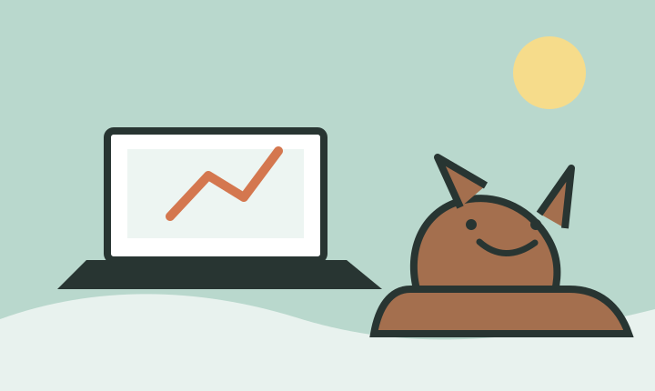
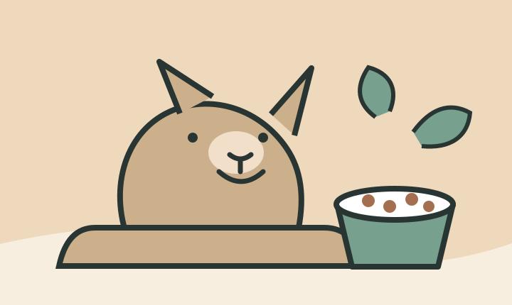
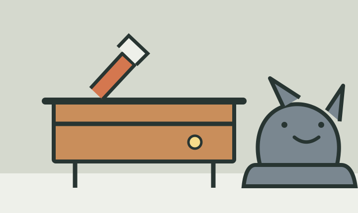

SIDE JOB
DOG FOOD
DOG × DIYLatest articles
大型犬と暮らしながら、フリーランスの仕事を回す3つのルール
散歩も仕事も家族との時間も、全部大事。予定を詰め込まずに一日を回すための、シンプルなルールです。
READ MORE副業の時間がない父へ。まず週3時間を作る方法
いきなり毎日やろうとすると、だいたい続きません。家族との時間を守りながら、最初の一歩を作る考え方をまとめました。
READ MORE大型犬のドッグフード選びで、外したくない5項目
原材料、体重との相性、便の状態、続けやすい価格。口コミだけに頼らず、毎日の様子を見ながら選ぶための基準です。
READ MORE大型犬のリードと散歩道具をまとめる、玄関収納DIY
散歩前に探し物をしないため、リード、ライト、タオルを一か所へ。無理なく作れる収納の考え方です。
READ MORE